Seja bem vindo ao TI
Criação de e-mail
-
Entendendo como funciona os padrões.
Para criar e-mail precisa primeiramente identificar para quem se destina esse e-mail, pois tem padrões que devem ser seguidos
por exemplo, e-mail que se destina a colaborador da operação o padrão é nomedafunção@fgrupo.com.br.
Quando se destina a colaborado que é supervisor e cargos acima o padrão é nomedocolaborador@fgrupo.com.br.
Nota:
Nota: Atentar-se para a regra padrão que envia como @fgrupo.com.br porém recebe como @planoflamboyant.com.br, @fgrupo.com.br, @fgrupo.com. E todo login é feito pelo @planoflamboyant.com.br
-
Vamos de exemplos de criação:
Um novo colaborador entrou para o departamento do TI, qual seria o e-mail que esse colaborador usaria?
Vamos lá, o departamento do TI, assim como RH, Financeiro, Qualidade, entre outros fazem parte do time de staff
que não se diferencia dos times de operação do grupo, no momento de criação de e-mail. Verifique a planilha de e-mail
para saber qual será criado. Então após analisar a planilha de e-mails e verificar o ultimo criado e ter já o e-mail que será criado.
Temos a resposta para a pergunta.
Resposta: O e-mail será ti2@fgrupo.com.br. Então como é feito a criação? Vamos lá!
-
2º passo: Acessando pagina da Infoqplan
No grupo atualmente temos uma empresa que faz a administração dos e-mails, essa empresa é Infoqplan.
Então para criar e-mail ou qualquer outra solicitação referente a eles, abrimos um chamado/ticket.
Para isso acessamos o seguinte link Clique Aqui Que abrirá nesta pagina:
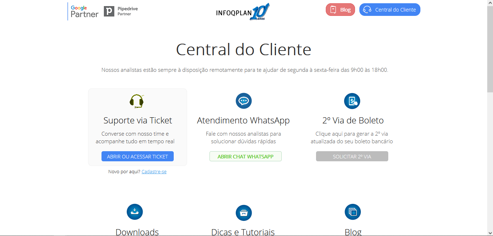
- Agora para prosseguir, clique em “ABRIR OU ACESSAR TICKET”
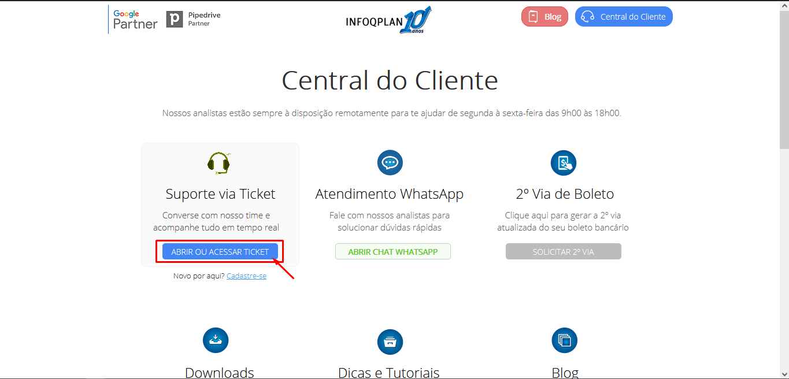
-
3ºPasso: Fazendo login, e acessando a empresa correta.
Você será direcionado a uma página de login, esse login é disponibilizado pelo seu Gestor, caso não tenha.
Se já tiver só fazer o login.
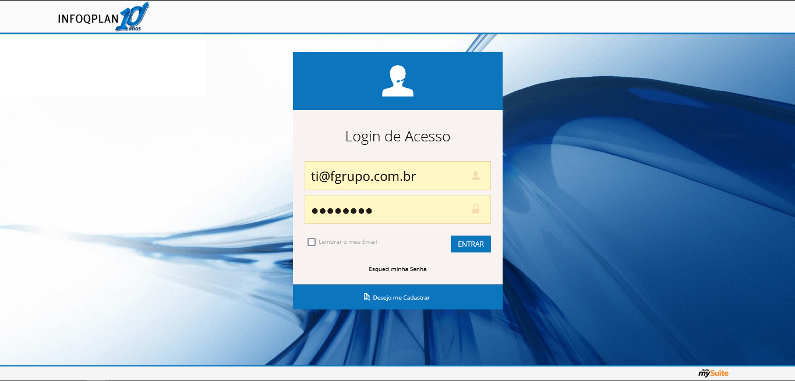
- Logo que fazer o login aparecerá um pop-up onde você selecionará a empresa para qual deseja fazer a abertura do ticket.
-
Nota:
Para cada empresa tem suas exceções. A empresa “Grupo Flamboyant”
são todas unidades com exceção ao Memorial Garden, que no caso você selecionará a empresa “Memorial Garden”.
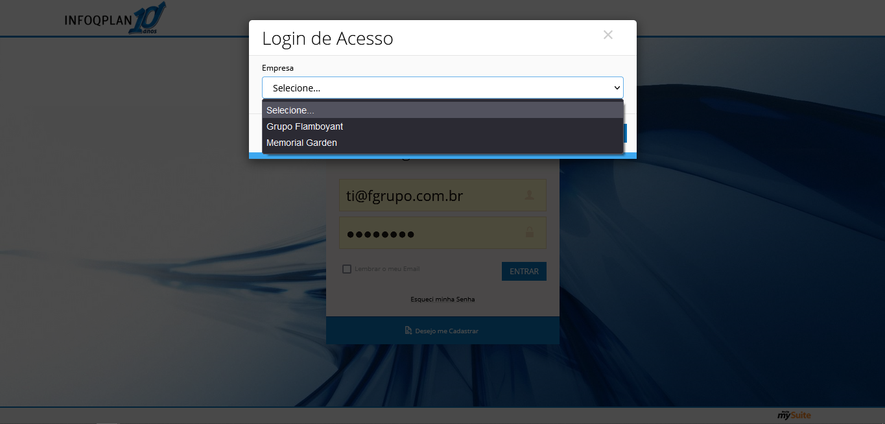
-
4º Passo: Início do Ticket, e observações antes de iniciar ,Boa, chegou até aqui, está faltando bem pouco para finalizar. Mas para tudo.
Antes de continuar preciso explicar uma coisa. Cada empresa, tem suas peculiaridades que se fizer errado dá problema futuramente.
PRESTE BEM ATENÇÃO NISSO: A empresa “Grupo Flamboyant” tem a regra padrão que envia como @fgrupo.com.br, porém recebe como @planoflamboyant.com.br, @fgrupo.com.br, @fgrupo.com e @parquehortolandia.com.br.
Notou algo diferente do citado anteriormente? Então como no Grupo Flamboyant temos a unidade do Cemitério Parque Hortolândia, vulgo CMPH, lá eles também usam o @parquehortolandia.com.br.
Então quando foi solicitar atente-se a isso. Ah mas é quando for para colaboradores do CMPH. Quando for do Grupo padrão que envia como @fgrupo.com.br, porém recebe como @planoflamboyant.com.br, @fgrupo.com.br, @fgrupo.com.
E todo login é feito pelo @planoflamboyant.com.br Já a empresa “Memorial Garden” como não é de Hortolândia, não tem o @parquehortolandia.com.br.
Sei que é complicado, mas quando perceber já pegou o jeito. E qualquer coisa, só consultar esse manual.
Agora que já sabe disso, clique em “NOVO TICKET”
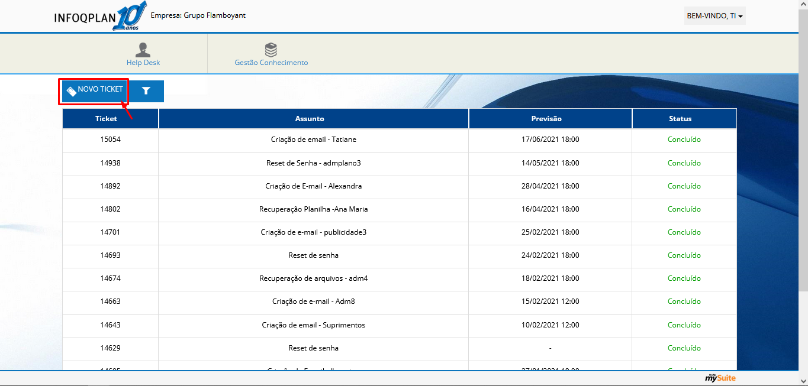
- Aparecerá um pop-up com um formulário para que responda. Vou mostrar como deve ser preenchido.
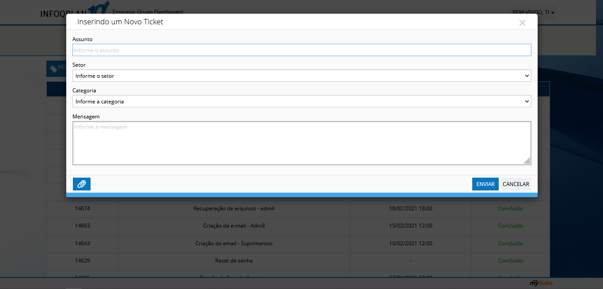
-
5º Passo: Preenchimento do formulário No campo “Assunto” é o assunto do chamado, tente ser mais direto possível
usar poucas palavras, mas que identifique o que vai ser o chamado.
Como usamos o exemplo do email do “ti2” vamos seguir com ele. Então campo assunto, “Criação de email – ti2”.
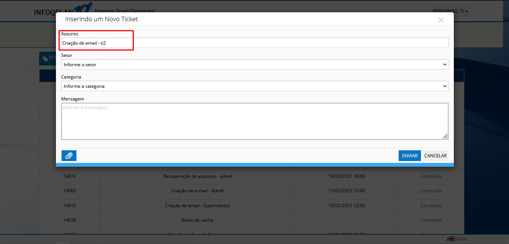
- No campo “Setor”, indicamos para qual setor vamos direcionar o chamado, nesse caso vamos enviar para o setor “Suporte e Assessoria”
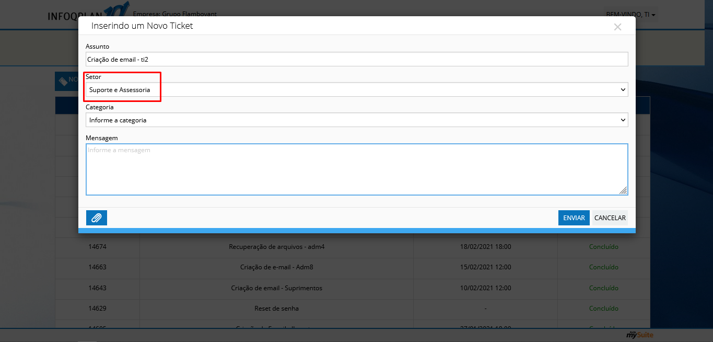
- No campo “Categoria”, indicamos a categoria do chamado, no nosso caso é “Aplicativo (GSuite, Webmail, Connectuse, MySuite)”
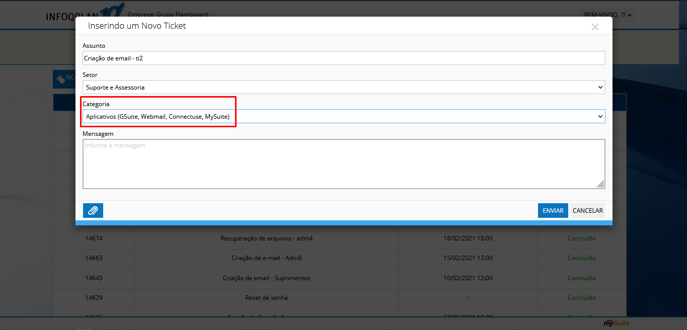
-
Chegamos ao Campo “Mensagem”, nesse campo seja mais descritivo possível, pois é onde o analista que receberá sua solicitação entenderá o que você deseja.
Então você pode escrever ou usar uma mensagem padrão, deixarei uma de exemplo abaixo. Somente lembre-se de alterar para o que deseja. Bom dia Prezados!!
Por gentileza poderiam criar o e-mail: ti2@fgrupo.com.br (lembrando que esse segue a regra padrão que envia como @fgrupo.com.br, porém recebe como @planoflamboyant.com.br, @fgrupo.com.br, @fgrupo.com). Obs: login, deve ser realizado como ti2@planoflamboyant.com.br (como é o padrão, também).
Grato!!
Att, Nickolas Sales “ ISSO É SOMENTE UM EXEMPLO, USE COM ATENÇÃO. Então ficará desta forma.
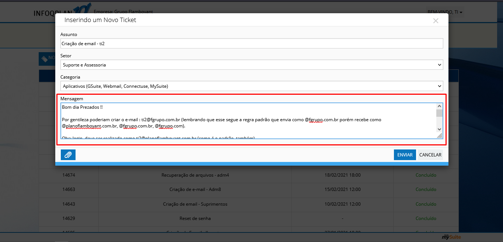
- Feito isso, só enviar e esperar o retorno dos analistas da Inforqplan. Geralmente demora 24hrs no máximo para retorno.
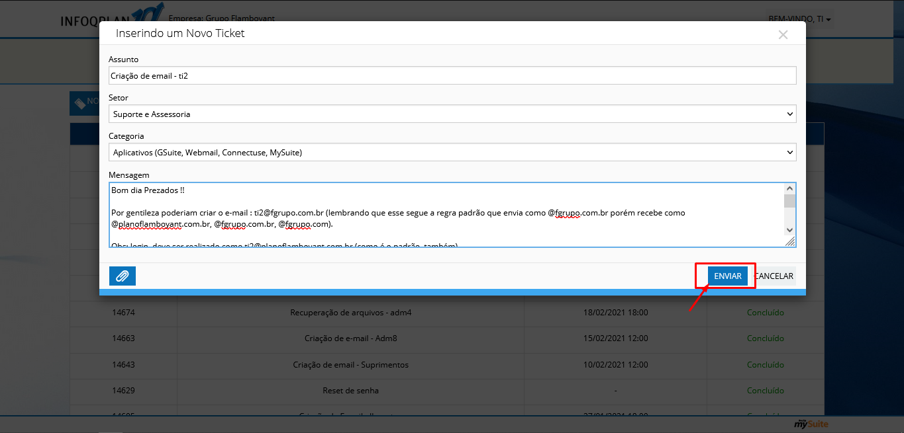
-
Você receberá o e-mail criado, conforme solicitou, a senha, e algumas orientações, como a de alterar a senha no primeiro login, copie e mande as recomendações para o solicitante.
Faça isso por e-mail, para que seja formalizado e não tenha problemas.
Após enviar ao solicitante, responda o próprio chamado agradecendo o envio, e que está tudo certo. pós isso, é vim o próximo. Valeu.